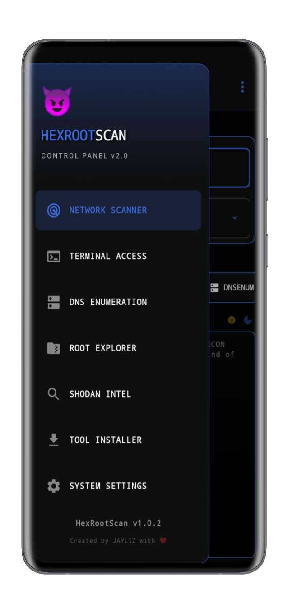
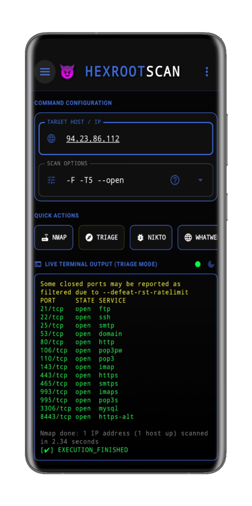
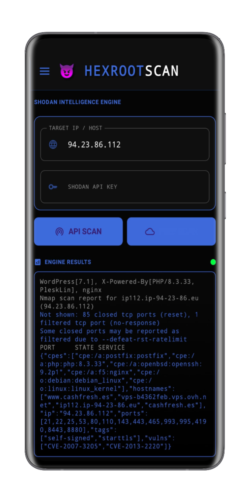

01
Network Analysis
Discover hosts, open ports and running services using integrated Nmap capabilities.
Network auditing, reconnaissance and security analysis directly from your Android device.
HexRootScan provides a native Android environment for network discovery, DNS analysis, vulnerability scanning and security reconnaissance.
$ hexrootscan --status
[ OK ] Root environment detected
$ tools --list
[01] NMAP
[02] WHOIS
[03] DIG
[04] NIKTO
[05] SHODAN
$ scanner --ready
SYSTEM READY_
A native Android security environment for network auditing, reconnaissance and analysis.
Discover hosts, open ports and running services using integrated Nmap capabilities.
Investigate domain information and DNS records using Whois and Dig.
Analyze web servers for potentially insecure configurations using Nikto.
Search exposed internet-connected assets through the Shodan API.
Designed to take advantage of superuser privileges when advanced tools require them.
Built entirely with Kotlin and Jetpack Compose for a modern mobile interface.
Network discovery and security auditing through port and service analysis.
Domain registration and ownership information lookup.
DNS query utility for inspecting host and domain records.
Web server security scanner for identifying common issues.
Search internet-facing devices and exposed services through the Shodan API.
A dark, focused Android interface built for practical security workflows.



Define the authorized host, domain or network.
Select the appropriate reconnaissance tool.
Inspect ports, services, DNS and web findings.
Use the collected information for authorized security assessment.
HexRootScan brings common reconnaissance utilities into a single Android interface.
nmap \
-sV \
-p- \
target.exampleHexRootScan is built entirely for Android, using Kotlin and Jetpack Compose.
100% Kotlin application architecture.
Modern declarative Android UI.
Optimized and obfuscated release builds.
HexRootScan is intended solely for authorized security testing, auditing your own networks and educational research. Unauthorized testing of systems without consent may be illegal. The author assumes no responsibility for misuse.
Network reconnaissance and security analysis from a native Android environment.